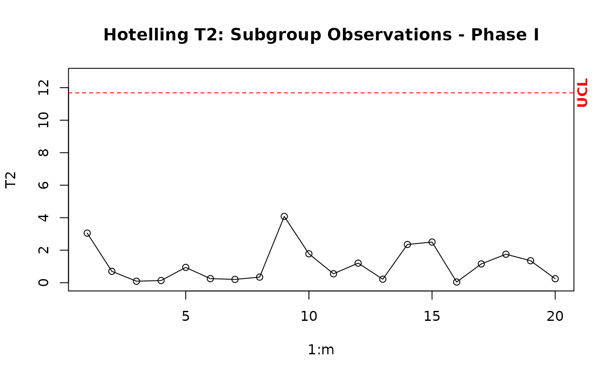

Builds the phase I Hotelling control chart.
cchart.T2.1(T2, m, n, p)Return a control chart.
It builds the Hotelling T2 control chart for multivariate normal data (m samples / samples of size n > 1), used retrospective / validation analysis (phase I); the control limits are based on the F distribution.
Montgomery, D.C.,(2008)."Introduction to Statistical Quality Control". Chapter 11. Wiley
mu <- c(5.682, 88.22)
Sigma <- miscTools::symMatrix(c(3.770, -5.495, 13.53), 2)
datum <- data.1(20, 10, mu, Sigma)
estat <- stats(datum, 20, 10, 2)
T2 <- T2.1(estat, 20, 10)
# estat is a list with the auxiliary statistics. T2 is a matrix with the values of the T2 statistic.
cchart.T2.1(T2, 20, 10, 2)
